Firewall
实验主题¶
• 防火墙 • Netfilter • 使用 iptables 设置防火墙规则 • iptables 的各种应用
实验目的¶
1.理解iptables防火墙的工作原理及配置方法。 2.掌握防火墙规则的设计与应用，提升网络安全防护能力。 3.学习使用Docker构建虚拟网络实验环境。 4.掌握网络访问控制、流量限制和负载均衡等技术。
实验环境¶
网络拓扑
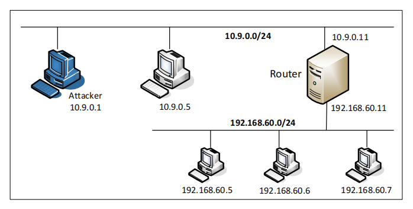
实验任务¶
任务一：防火墙规则的实验【iptables】¶
iptables使用方法¶
- 三层结构
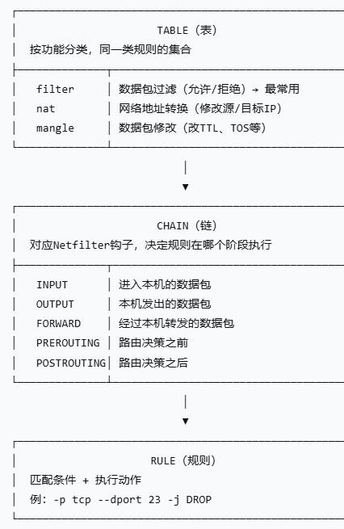
- 基本格式：
iptables -t 表名 -操作 链名 匹配规则 -j 动作
A：保护路由器¶
- 目标： 在路由器上设置规则，实现： 外部机器可以ping路由器 外部机器不能telnet进入路由器 其他所有流量默认拒绝
- 规则解析
- 为什么默认规则要设为DROP 安全原则：默认丢弃，只开放必要的服务 如果不设DROP，所有未匹配的包都会被默认ACCEPT 这里我们只允许ICMP，其他所有流量（如telnet、ssh等）都会被拒绝
- 具体操作
进入路由器容器并配置iptables规则
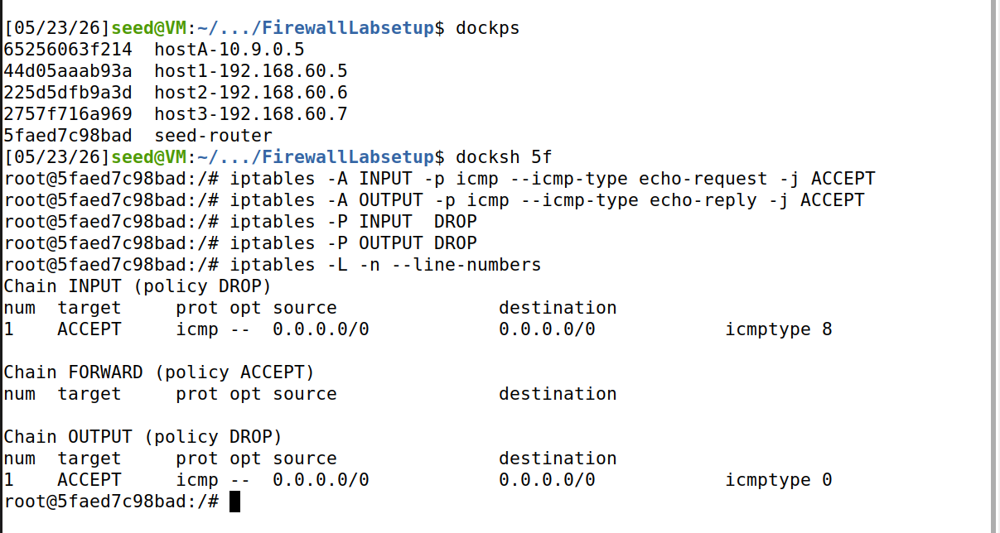
查看iptables构造确认已经添加完成 - 验证iptables配置是否生效
进入攻击者容器执行
ping 10.9.0.11可以ping通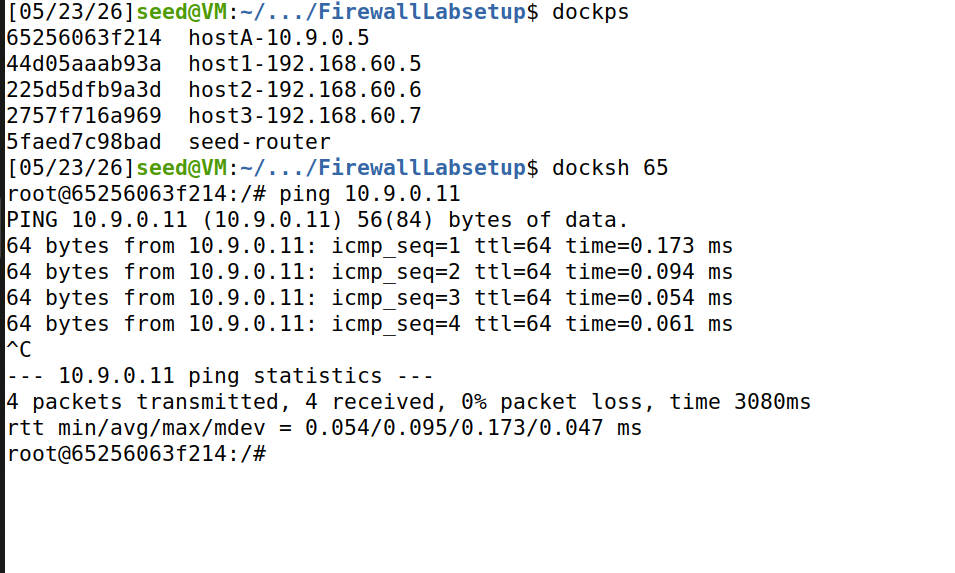
尝试telnet连接telnet 10.9.0.11显示超时因为INPUT默认DROP，telnet包被丢弃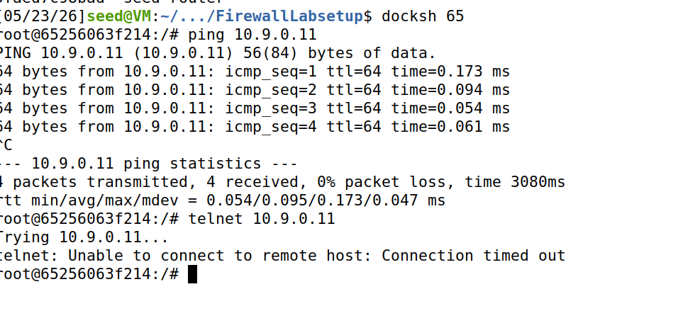
全部符合预期 - 清理规则:在继续下一个任务前，将 filter 表恢复到初始状态
B：保护内部网络¶
- 目标 在路由器上设置FORWARD链规则，实现： 外部主机不能ping内部主机 外部主机可以ping路由器 内部主机可以ping外部主机 其他所有转发流量默认阻止
- 数据包流向分析
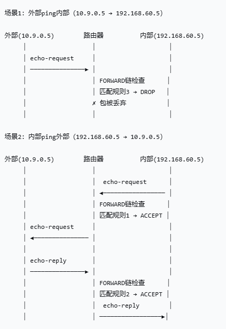
- 规则解析
# 1. 允许内部主机发出的ping请求（从内部到外部） iptables -A FORWARD -s 192.168.60.0/24 -p icmp --icmp-type echo-request -j ACCEPT # 2. 允许返回的ping响应（从外部到内部） iptables -A FORWARD -d 192.168.60.0/24 -p icmp --icmp-type echo-reply -j ACCEPT # 3. 阻止外部发起的ping请求（从外部到内部） iptables -A FORWARD -d 192.168.60.0/24 -p icmp --icmp-type echo-request -j DROP # 4. 设置FORWARD链默认策略为DROP iptables -P FORWARD DROP - 具体操作
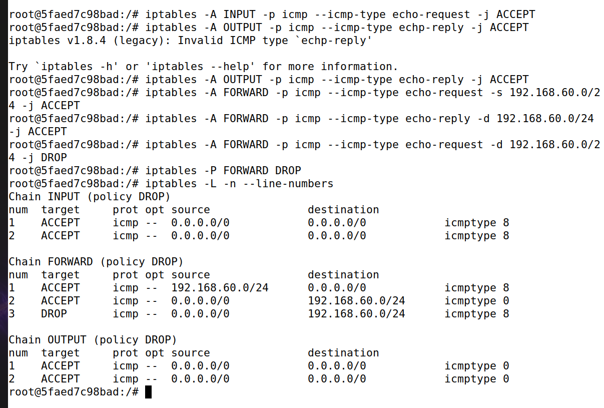
- 验证配置是否有效
在攻击者容器中执行
ping -c 4 192.168.60.5,请求超时ping不通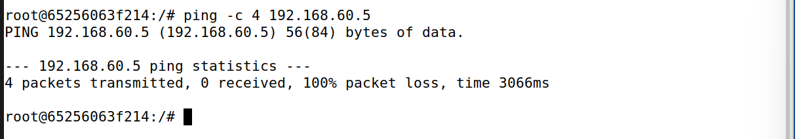
在攻击者容器中执行ping 10.9.0.11,可以ping通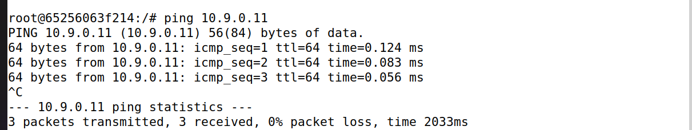
进入内网容器执行ping 10.9.0.5,可以ping通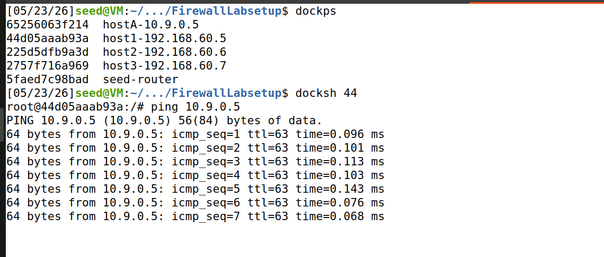
- 清理规则:在继续下一个任务前，将 filter 表恢复到初始状态
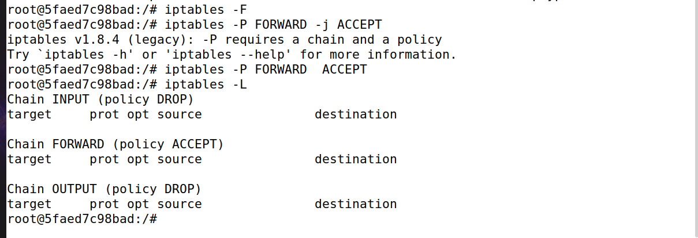
保护内部服务器¶
- 目标：实现精细的TCP访问控制 外部只能访问192.168.60.5的telnet服务（端口23） 外部不能访问其他内部服务器 内部主机可以互访 内部主机不能访问外部服务
- 规则：
# 1. 允许外部到192.168.60.5:23的请求（从外部到内部） iptables -A FORWARD -i eth0 -p tcp -d 192.168.60.5 --dport 23 -j ACCEPT # 2. 允许192.168.60.5:23返回的响应（从内部到外部） iptables -A FORWARD -i eth1 -p tcp -s 192.168.60.5 --sport 23 -j ACCEPT # 3. 允许内部主机之间的所有流量 iptables -A FORWARD -s 192.168.60.0/24 -d 192.168.60.0/24 -j ACCEPT # 4. 设置FORWARD链默认策略为DROP iptables -P FORWARD DROP - 具体操作
先查看网络接口
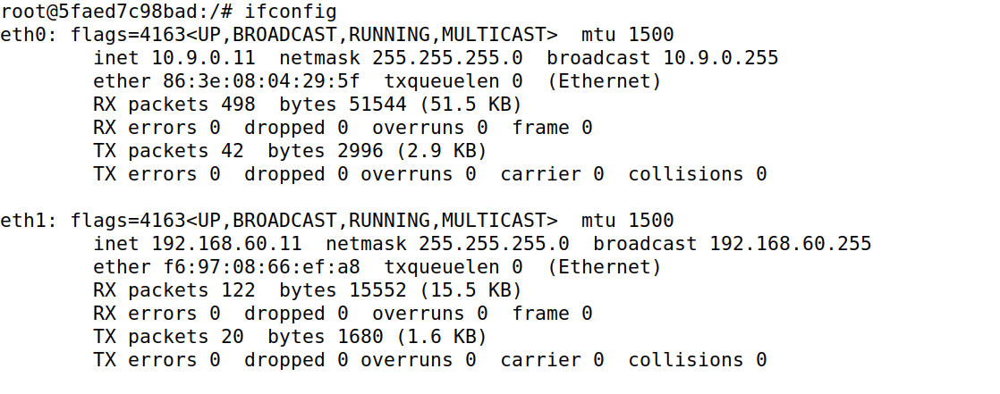
eth0对应外部网络，eth1对应内部网络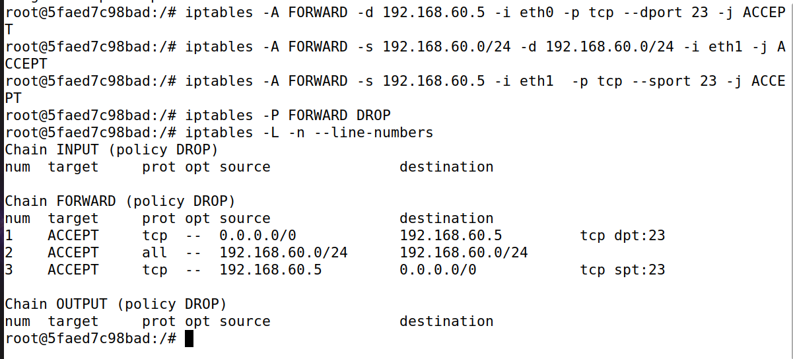
- 验证配置
在攻击者容器中执行
telnet 192.168.60.5可以连接成功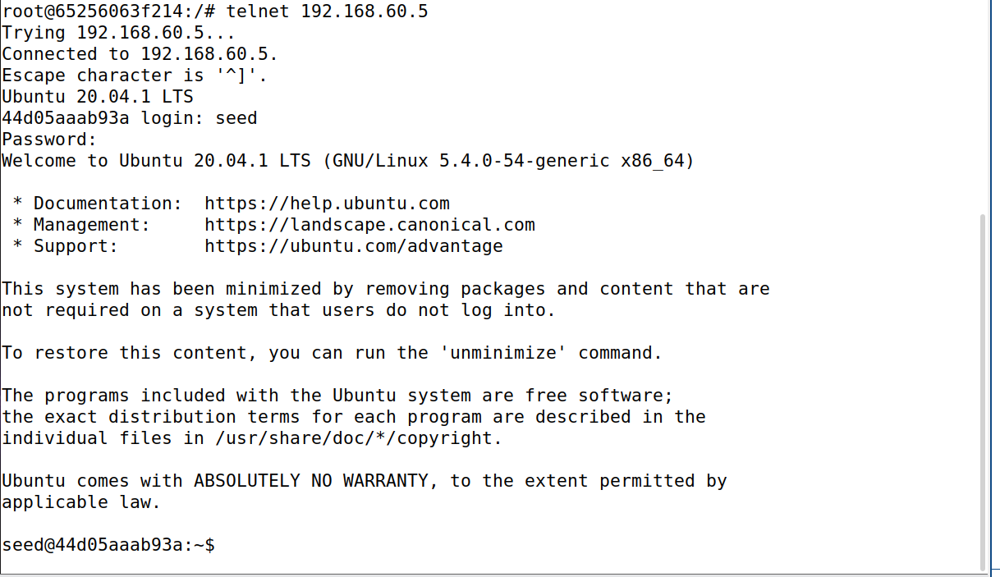
尝试执行telnet 192.168.50.6访问内网中的其他服务器的telnet服务，超时连接失败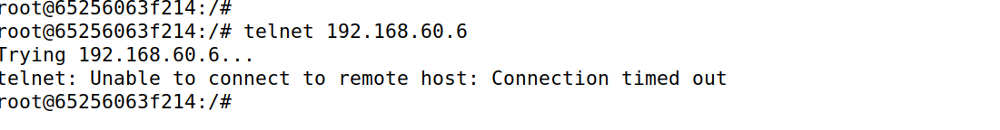
在内网服务器中执行telnet 192.168.60.6尝试访问内网其他服务器的telnet服务，访问登录成功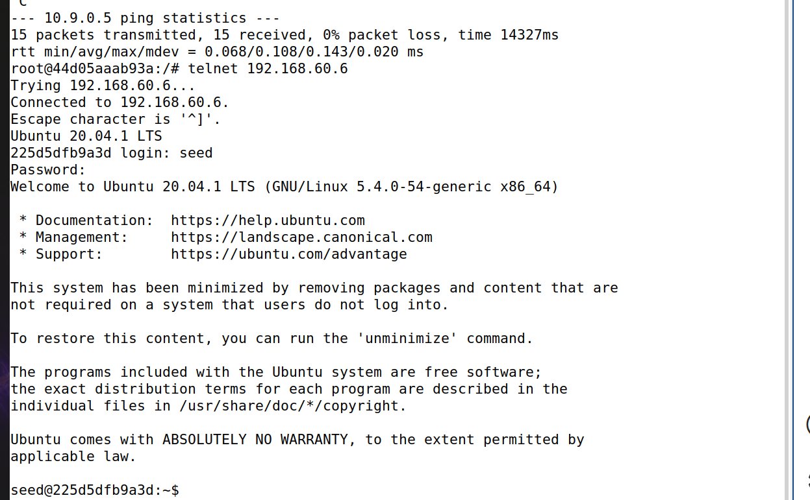
在内网服务器中执行telnet 10.9.0.5尝试访问外网服务器的telnet服务，超时连接失败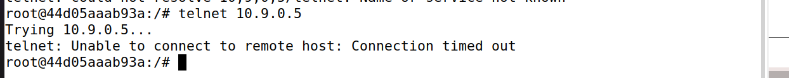
- 清理规则
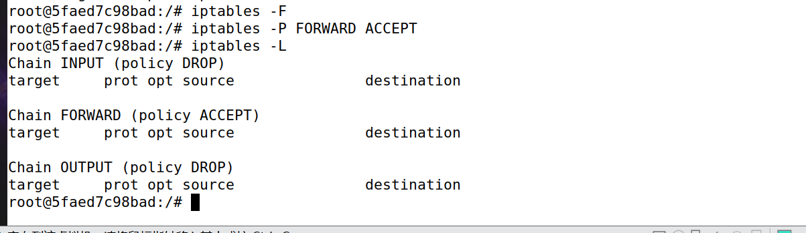
任务二：连接追踪与有状态防火墙¶
在上一个任务中，我们只设置了无状态防火墙，逐个检查每个数据包。然而，数据包通常不是独立的；它们可能是某个 TCP 连接的一部分，或者它们可能是由其他数据包触发的 ICMP 数据包。将数据包独立处理并不会考虑其上下文，因此可能导致不准确、不安全或复杂的防火墙规则。例如，如果我们希望仅允许在建立连接之后才能进入网络的 TCP 数据包，使用无状态数据包过滤器是无法轻松实现的，因为当防火墙检查每个单独的 TCP 数据包时，它无法知道该数据包是否属于一个已建立的连接，除非防火墙为每个连接维护一些状态信息,这样做，它就变成了有状态防火墙
A：连接追踪实验¶
通过内核中的 conntrack 模块来实现追踪连接
conntrack -L检查路由器容器上的连接追踪信息
目标:通过一系列实验帮助理解此追踪机制中的连接概念，特别是对于 ICMP 和UDP 协议，因为与 TCP 协议不同，它们没有连接。请进行以下实验。每个实验后，描述观察结果并解释
1. ICMP 实验：运行以下命令并检查路由器上的连接追踪信息。描述ICMP 连接状态保持多久？
watch -n 1 "conntrack -L | grep -E 'icmp|192.168.60.5'"持续监视conntrack
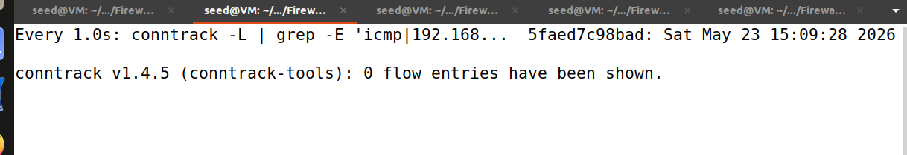
2. 在攻击者容器中执行ping 192.168.60.5
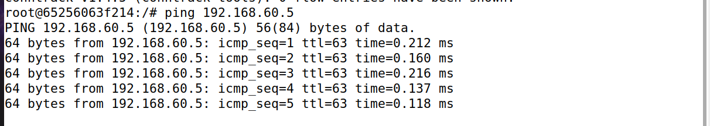
3.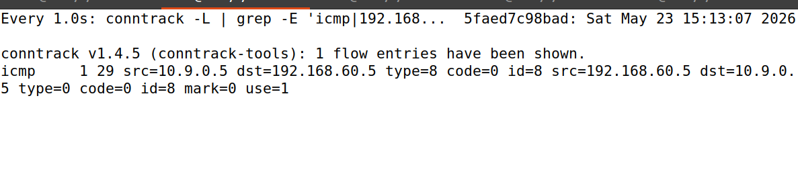
icmp 1 29 src=10.9.0.5 dst=192.168.60.5 type=8 code=0 id=10 src=192.168.60.5 dst=10.9.0.5 type=0 code=0 id=10 mark=0 use=1
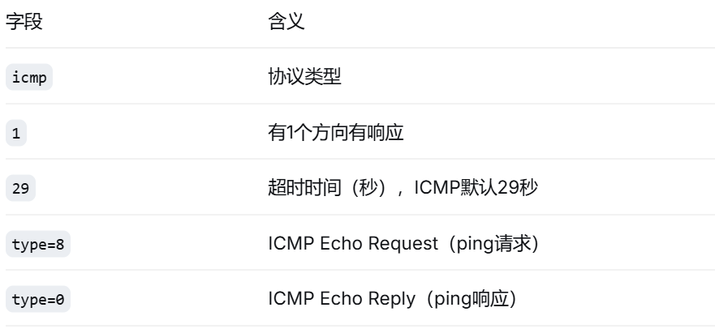
4.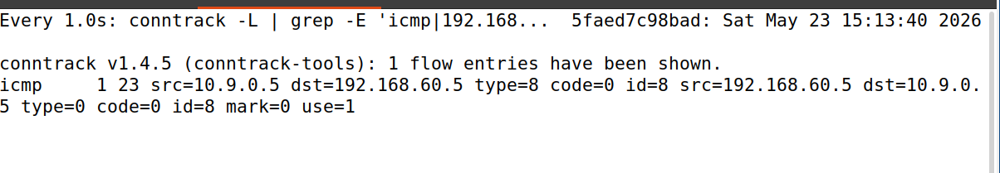
ICMP虽然没有真正的"连接"，但conntrack会创建临时条目,默认超时时间：约30秒.ping完成后，条目仍会保留一段时间才消失 2. UDP实验：运行以下命令并检查路由器上的连接追踪信息。描述UDP 连接状态保持多久？// 在 192.168.60.5 上，启动一个 netcat UDP 服务器
nc -lu 9090
// 在 10.9.0.5 上，发送 UDP 数据包
nc -u 192.168.60.5 9090
输入一些内容，然后回车
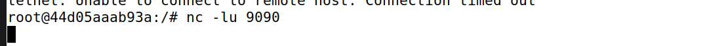
2.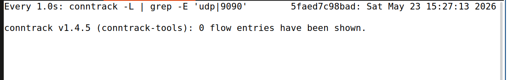
3.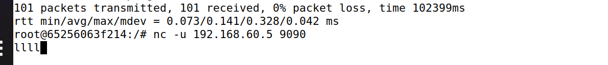
4.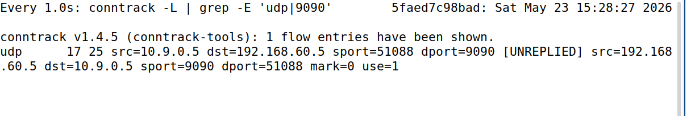
udp 17 29 src=10.9.0.5 dst=192.168.60.5 sport=51088 dport=9090
[UNREPLIED] src=192.168.60.5 dst=10.9.0.5 sport=9090 dport=51088s mark=0 use=1
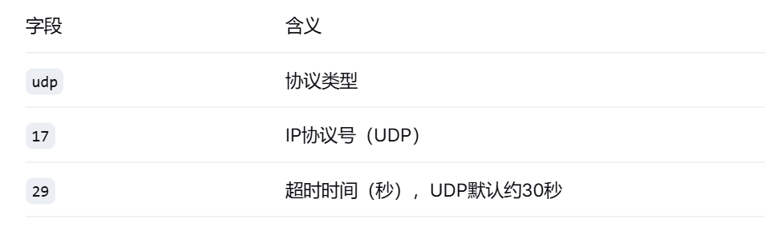
5. UDP是"无连接"协议，但conntrack仍会创建伪连接,默认超时时间：约30秒（比TCP短）发送数据后，条目立即创建，约30秒后消失3. TCP实验：运行以下命令并检查路由器上的连接追踪信息。描述TCP 连接状态保持多久？
// 在 192.168.60.5 上，启动一个 netcat TCP 服务器
nc -l 9090
// 在 10.9.0.5 上，发送 TCP 数据包
nc 192.168.60.5 9090
输入一些内容，然后回车
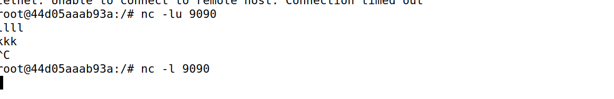
2.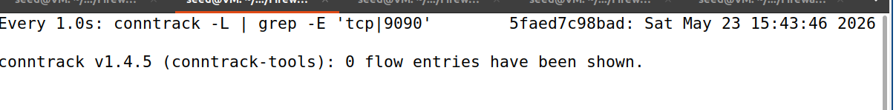
3.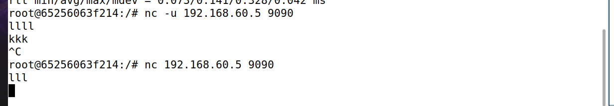
4.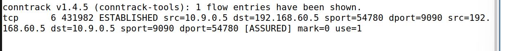
5.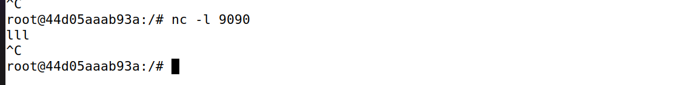
6.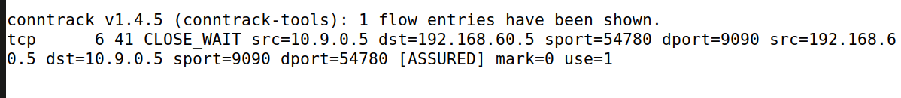
7.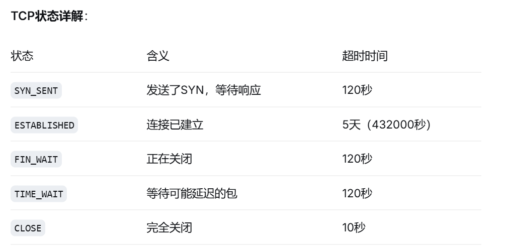
TCP连接有完整的状态机,ESTABLISHED状态超时时间非常长（5天），适合长连接,conntrack会跟踪TCP的每个状态转换B：设置有状态防火墙¶
任务要求 在任务2.C的基础上，新增一个功能 允许内部主机访问任何外部服务器 同时保留任务2.C的所有原有要求： 外部只能访问 192.168.60.5:23（telnet） 外部不能访问其他内部主机 内部主机可以互访
# 规则1：外部访问特定内部服务器
iptables -A FORWARD -i eth0 -p tcp -d 192.168.60.5 --dport 23 \
-m conntrack --ctstate NEW -j ACCEPT
# 规则2：内部访问外部
iptables -A FORWARD -i eth1 -s 192.168.60.0/24 \
-m conntrack --ctstate NEW -j ACCEPT
# 规则3：已建立和相关连接
iptables -A FORWARD -m conntrack --ctstate ESTABLISHED,RELATED -j ACCEPT
# 规则4：内部互访
iptables -A FORWARD -s 192.168.60.0/24 -d 192.168.60.0/24 -j ACCEPT
# 规则5：默认拒绝
iptables -P FORWARD DROP
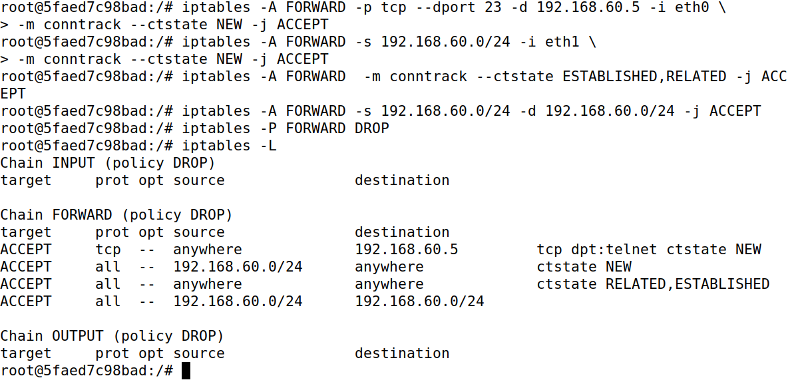
检测配置是否生效 外部只能访问内部特定服务器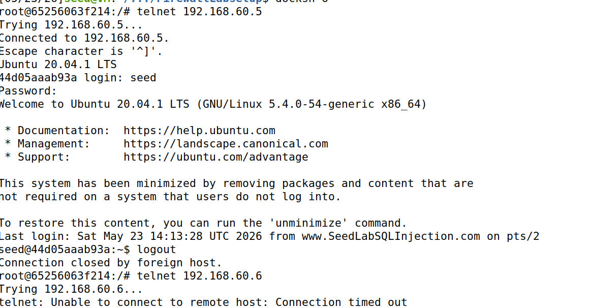
内部可以访问外部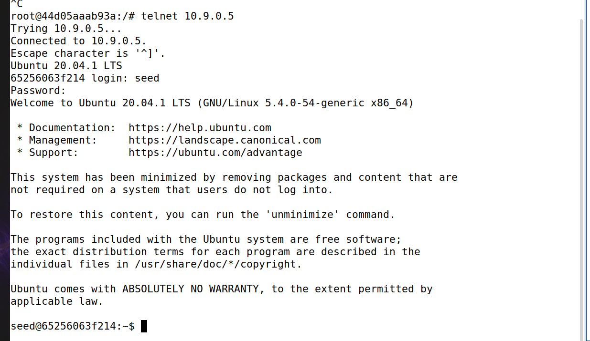
内部可以访问内部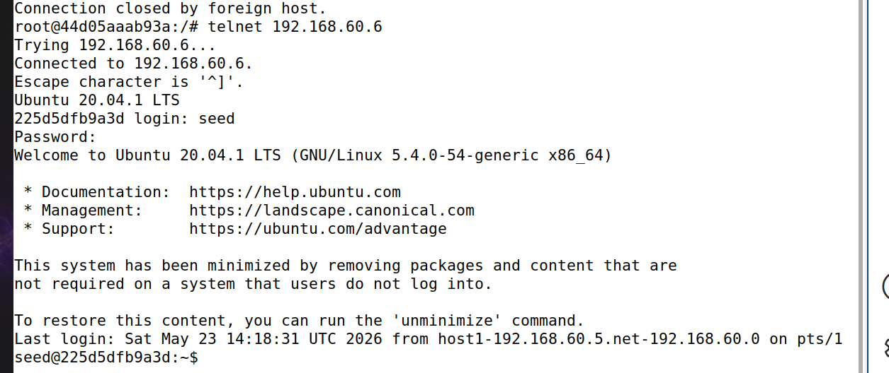
如果不使用连接追踪，如何实现内部访问外部？需要为每个目标IP、每个端口写规则，不可行 端口数量巨大：TCP/UDP各有65535个端口 外部IP无限：无法枚举所有外部服务器 动态端口：很多服务使用随机端口（如RPC、FTP） 规则爆炸：防火墙性能会严重下降 清除规则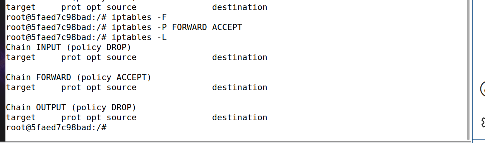
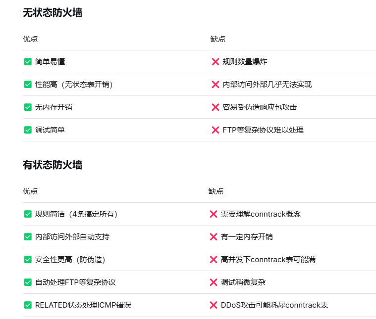
任务三：限制网络流量¶
规则
//限流规则
iptables -A FORWARD -s 10.9.0.5 -m limit --limit 10/minute --limit-burst 5 -j ACCEPT
//丢弃规则
iptables -A FORWARD -s 10.9.0.5 -j DROP
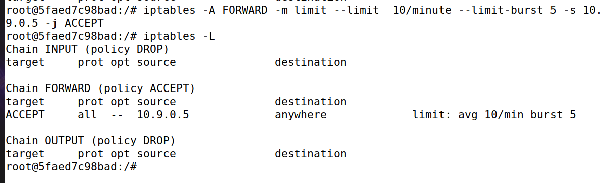
ping 192.168.60.5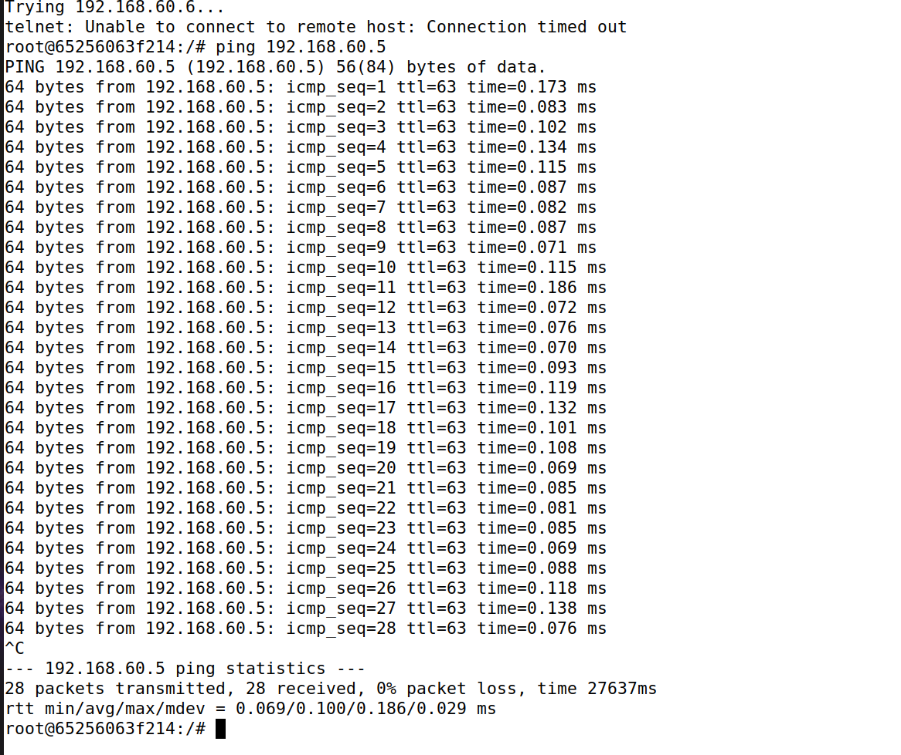
没有达到限流效果，因为默认不匹配的包也会转发 2. 配置第二条规则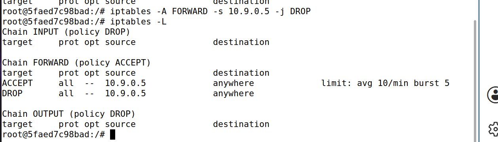
ping 192.168.60.5 可以看到前五个包seq号是连续的后面就开始出现丢包现象，说明达到了限流效果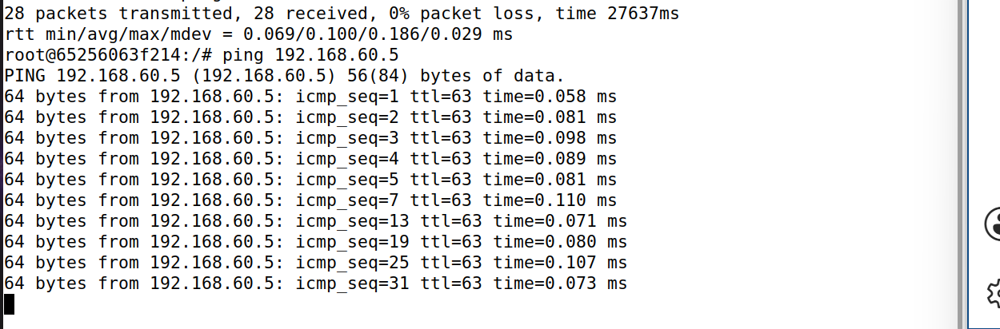
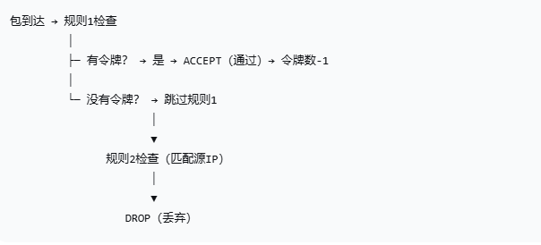
清除规则
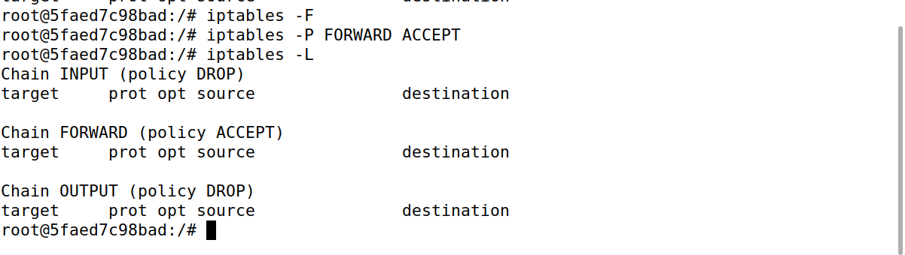
任务四：负载均衡¶
分别在三个主机中启动服务器
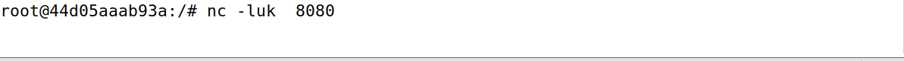
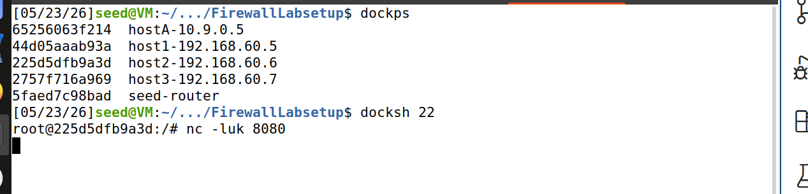
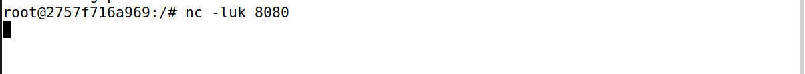
使用 nth 模式（轮询）¶
- 原理：nth模式按照固定顺序分发数据包，实现轮询负载均衡。 数据包到达顺序： 包1 ──► 匹配 packet=0 ──► 转发到 192.168.60.5 包2 ──► 匹配 packet=1 ──► 转发到 192.168.60.6 包3 ──► 匹配 packet=2 ──► 转发到 192.168.60.7 包4 ──► 匹配 packet=0 ──► 转发到 192.168.60.5 包5 ──► 匹配 packet=1 ──► 转发到 192.168.60.6 包6 ──► 匹配 packet=2 ──► 转发到 192.168.60.7 ...
- 完整规则
# 规则1：每3个包中的第0个（第1个）→ 服务器1 iptables -t nat -A PREROUTING -p udp --dport 8080 \ -m statistic --mode nth --every 3 --packet 0 \ -j DNAT --to-destination 192.168.60.5:8080 # 规则2：由于没有被第一条规则匹配的数据包不会被丢弃，所以第二条规则接着去匹配未被第一条匹配的数据包，每两个数据包这的第一个被匹配转发给服务器2 iptables -t nat -A PREROUTING -p udp --dport 8080 \ -m statistic --mode nth --every 2 --packet 0 \ -j DNAT --to-destination 192.168.60.6:8080 # 规则3：前两条都没有匹配上的数据包直接设置默认匹配给服务器三 iptables -t nat -A PREROUTING -p udp --dport 8080 \ -j DNAT --to-destination 192.168.60.7:8080 - 检验配置是否生效 发送6个数据包 三台主机分别收到了两个数据包
使用 random 模式¶
规则
# 规则1：33%的流量 → 服务器1
iptables -t nat -A PREROUTING -p udp --dport 8080 \
-m statistic --mode random --probability 0.33 \
-j DNAT --to-destination 192.168.60.5:8080
# 规则2：剩余流量的50% → 服务器2
iptables -t nat -A PREROUTING -p udp --dport 8080 \
-m statistic --mode random --probability 0.5 \
-j DNAT --to-destination 192.168.60.6:8080
# 规则3：剩余的流量 → 服务器3（不需要probability）
iptables -t nat -A PREROUTING -p udp --dport 8080 \
-j DNAT --to-destination 192.168.60.7:8080
两种模式对比¶
nth模式（轮询） 特性 说明 分布特性 完全均匀，严格轮转 短期分布 非常均匀（1,2,3,1,2,3...） 适合场景 请求处理时间相近的服务 优点 预测性强，完全公平 缺点 如果某台服务器慢，会拖慢整体 random模式（随机） 特性 说明 分布特性 概率均匀，长期接近相等 短期分布 可能有波动（连续分到同一台） 适合场景 请求处理时间差异大，或服务器性能不同 优点 实现简单，可配合权重 缺点 短期可能不均衡
问题与思考¶
- 在1.C实验中为什么iptables规则要-i指定网络接口
因为FORWARD链处理的是双向流量，需要明确区分数据包的“进入方向”来精确控制规则，-i 指定数据包从哪个网络接口进入路由器，这决定了数据包的来源是外部网络还是内部网络
如果没有 -i 会怎样
bash # 错误写法：没有指定接口 iptables -A FORWARD -p tcp -d 192.168.60.5 --dport 23 -j ACCEPT iptables -A FORWARD -p tcp -s 192.168.60.5 --sport 23 -j ACCEPT问题：这两条规则会匹配任何方向的流量，可能导致 内部主机伪造源IP绕过规则 无法精确控制谁可以发起连接